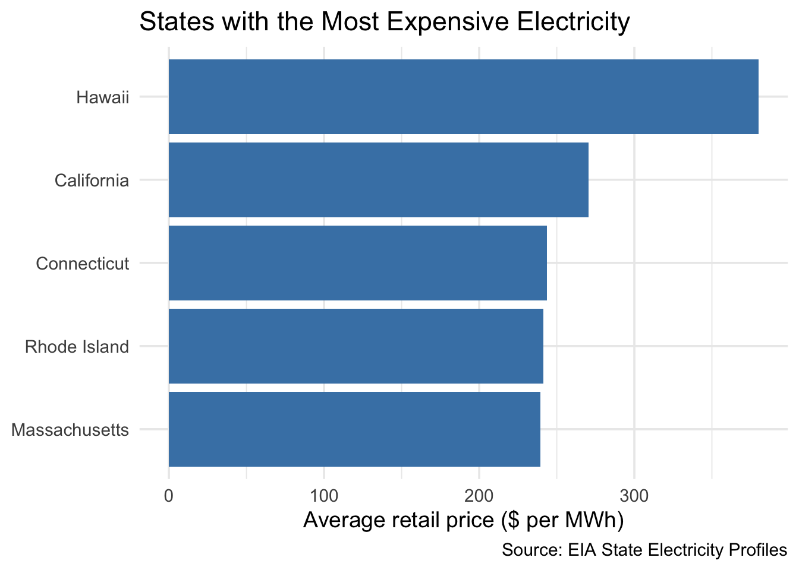
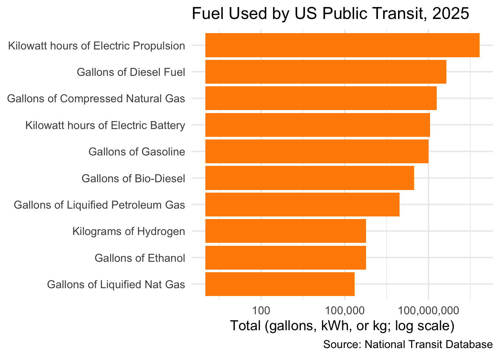
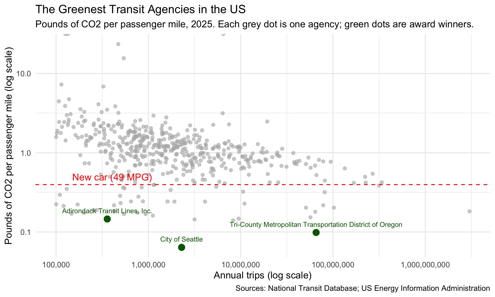
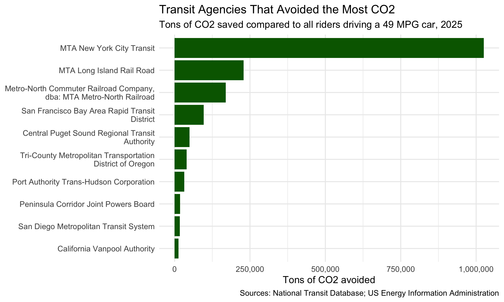

Code
library(tidyverse)
library(gt)
library(scales)
library(readxl)Calvin Ravito Putra
Public transit, like buses, subways, and trains, is often called a “green” way to travel. But transit still causes pollution. Buses burn diesel and gas, and trains run on electricity that may come from coal or natural gas power plants. The real question is how much pollution transit creates compared to the pollution that would happen if all those riders drove their own cars instead.
In this report, I take on the role of Executive Director of the Green Transit Alliance (GTA), a group that gives yearly awards to the most environmentally friendly transit agencies in the US. To choose the winners, I combine data from two government sources: the National Transit Database, which shows how much fuel each agency uses and how many people it serves, and the Energy Information Administration, which shows how clean the electricity is in each state.
The report first explores the data, then calculates how much CO2 each transit agency produces. Since big agencies naturally produce more pollution, I compare agencies fairly by looking at emissions per trip and per passenger mile. Finally, I announce the award winners in a press release.
get_eia_sep <- function(state, abbr){
library(tidyverse)
library(stringr)
library(httr2)
library(rvest)
library(fs)
state_formatted <- str_to_lower(state) |> str_replace_all("\\s", "")
dir_name <- fs::path("data", "mp02")
file_name <- fs::path(dir_name, state_formatted)
fs::dir_create(dir_name, recurse=TRUE)
if(!fs::file_exists(file_name)){
BASE_URL <- "https://www.eia.gov"
RESPONSE <- request(BASE_URL) |>
req_url_path("electricity",
"state",
state_formatted) |>
req_headers(
`User-Agent` = "Mozilla/5.0 (Macintosh; Intel Mac OS X 10.15; rv:149.0) Gecko/20100101 Firefox/149.0"
) |>
req_retry(
max_tries = 4,
) |>
req_perform(file_name)
resp_check_status(RESPONSE)
}
TABLE <- read_html(file_name) |>
html_element("table") |>
html_table() |>
mutate(Item = str_to_lower(Item))
if("U.S. rank" %in% colnames(TABLE)){
TABLE <- TABLE |> rename(Rank = `U.S. rank`)
}
CO2_MWh <- TABLE |>
filter(Item == "carbon dioxide (lbs/mwh)") |>
pull(Value) |>
str_replace_all(",", "") |>
as.numeric()
PRIMARY <- TABLE |>
filter(Item == "primary energy source") |>
pull(Rank)
RATE <- TABLE |>
filter(Item == "average retail price (cents/kwh)") |>
pull(Value) |>
as.numeric()
GENERATION_MWh <- TABLE |>
filter(Item == "net generation (megawatthours)") |>
pull(Value) |>
str_replace_all(",", "") |>
as.numeric()
data.frame(CO2_MWh = CO2_MWh,
primary_source = PRIMARY,
electricity_price_MWh = RATE * 10,
generation_MWh = GENERATION_MWh,
state = state,
abbreviation = abbr
)
}
EIA_SEP_REPORT <- map2(state.name, state.abb, get_eia_sep) |> list_rbind()load_ntd_energy <- function(){
library(readxl)
library(httr2)
library(tidyverse)
library(fs)
DATA_DIR <- fs::path("data", "mp02")
fs::dir_create(DATA_DIR, recurse=TRUE)
NTD_ENERGY_FILE <- fs::path(DATA_DIR, "2025_ntd_energy.xlsx")
if(!fs::file_exists(NTD_ENERGY_FILE)){
request("https://www.transit.dot.gov/") |>
req_url_path("sites",
"fta.dot.gov",
"files",
"2026-09",
"2025 Energy Consumption_260806.xlsx") |>
req_headers(
`User-Agent` = "Mozilla/5.0 (Macintosh; Intel Mac OS X 10.15; rv:149.0) Gecko/20100101 Firefox/149.0") |>
req_perform(NTD_ENERGY_FILE)
}
if(file.info(NTD_ENERGY_FILE)$size < 1e4){
cat("I was unable to download the NTD Energy File. Please try again.\n")
stop("Download failed. Please delete the corrupted file by running `unlink('data/mp02/2025_ntd_energy.xlsx')` and try again.")
}
to_numeric_fill_0 <- function(x){
x <- if_else(x == "-", NA, x)
replace_na(as.numeric(x), 0)
}
read_excel(NTD_ENERGY_FILE) |>
select(-c(`Reporter Type`,
`Reporting Module`,
`Gallons of Other Fuel`,
`Other Fuel Description`)) |>
mutate(across(-c(`Agency Name`,
`Mode`,
`TOS`),
to_numeric_fill_0)) |>
group_by(`NTD ID`, `Mode`, `Agency Name`) |>
summarize(across(where(is.numeric), sum),
.groups = "keep") |>
mutate(ENERGY = sum(c_across(c(where(is.numeric))))) |>
filter(ENERGY > 0) |>
select(-ENERGY) |>
ungroup()
}
NTD_ENERGY <- load_ntd_energy()load_ntd_service <- function(){
library(httr2)
library(tidyverse)
library(fs)
DATA_DIR <- fs::path("data", "mp02")
fs::dir_create(DATA_DIR, recurse=TRUE)
NTD_SERVICE_FILE <- fs::path(DATA_DIR, "2025_ntd_service.csv")
if(!fs::file_exists(NTD_SERVICE_FILE)){
request("https://data.transportation.gov/resource/4fir-qbim.csv") |>
req_url_query(`$query`=paste(
"SELECT `_5_digit_ntd_id` AS `NTD_ID`",
"`max_agency` AS `AGENCY`",
"`max_reporter_type` AS `reporter_type`",
"`max_organization_type` AS `organization_type`",
"`max_city` AS `city`",
"`max_state` AS `state`",
"`mode`",
"`type_of_service`",
"`max_primary_uza_code` as `uza_code`",
"`max_primary_uza_name` as `uza_name`",
"`max_primary_uza_area_sq_miles` as `uza_sq_miles`",
"`max_primary_uza_population` as `uza_population`",
"`max_service_area_sq_miles` as `service_area_sq_miles`",
"`max_service_area_population` as `service_area_population`",
"`questionable_record` as `flagged_likely_inaccurate`",
"`sum_unlinked_passenger_trips_upt` as `total_upt`",
"`sum_passenger_miles` WHERE caseless_one_of(`report_year`, '2025') limit 50000",
sep=",")) |>
req_headers(
`User-Agent` = "Mozilla/5.0 (Macintosh; Intel Mac OS X 10.15; rv:149.0) Gecko/20100101 Firefox/149.0") |>
req_perform(NTD_SERVICE_FILE)
}
if(file.info(NTD_SERVICE_FILE)$size < 1e4){
cat("I was unable to download the NTD Service File. Please try again.\n")
stop("Download failed. Please delete the corrupted file by running `unlink('data/mp02/2025_ntd_service.xlsx')` and try again.")
}
read_csv(NTD_SERVICE_FILE) |>
mutate(flagged_likely_inaccurate = !is.na(flagged_likely_inaccurate))
}
NTD_SERVICE <- load_ntd_service()This project uses three data sets. The first comes from the Energy Information Administration and shows, for each state, how much CO2 is released to make electricity, the price of electricity, and the main energy source. The second and third come from the National Transit Database: one shows how much of each fuel every transit agency used, and the other shows how many trips and passenger miles each agency provided. The tables can be connected using the agency ID, the transit mode, and the state.
In the service table, the agency ID is stored as text with zeros in front (for example “00377”), while the energy table stores it as a number (377). I changed the service ID to a number so the two tables can be joined later.
[1] "AR" "CB" "CC" "CR" "DR" "FB" "HR" "IP" "LR" "MB" "MG" "RB" "SR" "TB" "TR"
[16] "VP" "YR"The NTD uses two-letter codes for each type of transit, like “MB” or “HR”. These codes are hard to understand, so I replaced them with their full names.
recode_mode <- function(x) {
recode_values(x,
"HR" ~ "Heavy Rail",
"LR" ~ "Light Rail",
"MB" ~ "Bus",
"CB" ~ "Commuter Bus",
"RB" ~ "Bus Rapid Transit",
"TB" ~ "Trolleybus",
"DR" ~ "Demand Response",
"DT" ~ "Demand Response Taxi",
"VP" ~ "Vanpool",
"CR" ~ "Commuter Rail",
"YR" ~ "Hybrid Rail",
"SR" ~ "Streetcar",
"MG" ~ "Monorail/Automated Guideway",
"CC" ~ "Cable Car",
"IP" ~ "Inclined Plane",
"TR" ~ "Aerial Tramway",
"FB" ~ "Ferryboat",
"AR" ~ "Alaska Railroad",
"PB" ~ "Publico",
default = "Unknown"
)
}
NTD_ENERGY <- NTD_ENERGY |> mutate(Mode = recode_mode(Mode))
NTD_SERVICE <- NTD_SERVICE |> mutate(mode = recode_mode(mode))| Transit Modes in the NTD Energy Data | |
| Transit Mode | Number of Agency Records |
|---|---|
| Bus | 415 |
| Demand Response | 403 |
| Vanpool | 86 |
| Commuter Bus | 73 |
| Ferryboat | 29 |
| Commuter Rail | 27 |
| Streetcar | 24 |
| Light Rail | 22 |
| Bus Rapid Transit | 19 |
| Heavy Rail | 16 |
| Monorail/Automated Guideway | 6 |
| Hybrid Rail | 4 |
| Trolleybus | 4 |
| Inclined Plane | 3 |
| Aerial Tramway | 1 |
| Alaska Railroad | 1 |
| Cable Car | 1 |
The most common mode is Bus, with 415 rows, followed closely by Demand Response with 403. Demand Response is the dial-a-ride van service many towns offer to older or disabled riders. Rail modes are much rarer. For example, only 16 agencies report Heavy Rail, because trains are expensive to build and only big cities have them. Every code was matched to a name, so there are no “Unknown” rows.
EIA_SEP_REPORT |>
slice_max(electricity_price_MWh, n = 5) |>
ggplot(aes(x = reorder(state, electricity_price_MWh), y = electricity_price_MWh)) +
geom_col(fill = "steelblue") +
coord_flip() +
labs(title = "States with the Most Expensive Electricity",
x = NULL, y = "Average retail price ($ per MWh)",
caption = "Source: EIA State Electricity Profiles") +
theme_minimal(base_size = 14)
Hawaii has by far the most expensive electricity, at $380 per MWh. California, Connecticut, Rhode Island, and Massachusetts come next, at around $240–$270. Hawaii stands out because it’s the only state that mainly uses petroleum, which has to be shipped to the islands. The other four are all coastal states, where energy usually costs more.
| States with the Dirtiest Electricity | ||
| State | CO2 (lbs per MWh) | Primary Source |
|---|---|---|
| West Virginia | 1,912 | Coal |
| Kentucky | 1,744 | Coal |
| Wyoming | 1,724 | Coal |
| Missouri | 1,456 | Coal |
| Hawaii | 1,426 | Petroleum |
West Virginia has the dirtiest electricity, putting out 1,912 pounds of CO2 for every MWh. Kentucky, Wyoming, and Missouri are next, and all four mainly use coal. That makes sense because coal gives off more CO2 than other common power sources. Hawaii is fifth because it burns petroleum.
On average, the US gives off about 785 pounds of CO2 for every MWh of electricity. I used a weighted average, so states that make more electricity count more. A simple average would be about 832, which is too high because it treats small coal states the same as big states like Texas.
EIA_SEP_REPORT |>
group_by(primary_source) |>
summarize(num_states = n(),
avg_price = mean(electricity_price_MWh),
states = paste(abbreviation, collapse = ", ")) |>
arrange(num_states) |>
slice_head(n = 3) |>
gt() |>
cols_label(primary_source = "Primary Source", num_states = "Number of States",
avg_price = "Avg. Price ($/MWh)", states = "States") |>
fmt_currency(avg_price) |>
tab_header(title = "Rarest Primary Energy Sources")| Rarest Primary Energy Sources | |||
| Primary Source | Number of States | Avg. Price ($/MWh) | States |
|---|---|---|---|
| Petroleum | 1 | $380.00 | HI |
| Hydroelectric | 4 | $122.90 | ID, OR, VT, WA |
| Wind | 4 | $101.50 | IA, KS, NM, SD |
The three rarest main energy sources are petroleum, hydroelectric, and wind. Only Hawaii mainly uses petroleum, and it also has the most expensive electricity in the country. Hydroelectric is the main source in four states (Washington, Oregon, Idaho, Vermont), and wind is too (Iowa, Kansas, New Mexico, South Dakota). Wind states have pretty cheap electricity, about $102 per MWh on average.
New York’s electricity is about 1.5 times cleaner than Texas’s. Texas gives off 823 pounds of CO2 per MWh, while New York gives off 537. Both mainly use natural gas, but New York also gets a lot of power from hydroelectric and nuclear plants.
To make the fuel data easier to work with, I reshaped the table so that each fuel type is in one column instead of many separate columns.
top5_agencies <- fuel_long |>
filter(str_starts(fuel, "Gallons")) |>
group_by(`Agency Name`) |>
summarize(total = sum(amount)) |>
slice_max(total, n = 5)
NTD_ENERGY |>
filter(`Agency Name` %in% top5_agencies$`Agency Name`) |>
group_by(`Agency Name`) |>
summarize(Diesel = sum(`Gallons of Diesel Fuel`),
Gasoline = sum(`Gallons of Gasoline`),
CNG = sum(`Gallons of Compressed Natural Gas`),
`Bio-Diesel` = sum(`Gallons of Bio-Diesel`)) |>
mutate(Total = Diesel + Gasoline + CNG + `Bio-Diesel`) |>
arrange(desc(Total)) |>
gt() |>
fmt_number(-`Agency Name`, decimals = 0) |>
tab_header(title = "Top 5 Transit Agencies by Gallons of Fuel Used")| Top 5 Transit Agencies by Gallons of Fuel Used | |||||
| Agency Name | Diesel | Gasoline | CNG | Bio-Diesel | Total |
|---|---|---|---|---|---|
| New Jersey Transit Corporation | 38,144,027 | 2,055,895 | 1,521,492 | 0 | 41,721,414 |
| MTA New York City Transit | 30,217,934 | 4,270,146 | 6,328,381 | 0 | 40,816,461 |
| Los Angeles County Metropolitan Transportation Authority | 0 | 994,810 | 30,410,141 | 0 | 31,404,951 |
| Northeast Illinois Regional Commuter Railroad Corporation | 26,829,691 | 0 | 0 | 0 | 26,829,691 |
| Massachusetts Bay Transportation Authority | 20,627,960 | 1,290,452 | 1,534,123 | 0 | 23,452,535 |
New Jersey Transit uses the most fuel, about 41.7 million gallons, with MTA New York City Transit close behind at about 40.8 million. Most of their fuel is diesel. LA Metro is third but uses almost no diesel, because its buses mainly run on compressed natural gas. Chicago’s Metra commuter rail runs completely on diesel. All five are big agencies in large cities, which explains why they use so much fuel.
fuel_long |>
group_by(fuel) |>
summarize(total = sum(amount)) |>
filter(total > 0) |>
ggplot(aes(x = reorder(fuel, total), y = total)) +
geom_col(fill = "darkorange") +
coord_flip() +
scale_y_log10(labels = comma) +
labs(title = "Fuel Used by US Public Transit, 2025",
x = NULL, y = "Total (gallons, kWh, or kg; log scale)",
caption = "Source: National Transit Database") +
theme_minimal(base_size = 14)
Diesel is the most used liquid fuel in US transit, at about 438 million gallons, followed by compressed natural gas and gasoline. Electric propulsion is also very large, about 6.7 billion kWh, mostly from subways and light rail. The graph uses a log scale because the amounts are so different in size. Also, not all fuels are measured the same way: electricity is in kWh and hydrogen is in kilograms.
Among fuels that are used at all, the least used is Gallons of Liquified Nat Gas, at about 223,362 gallons, and only one agency uses it. Bunker fuel and kerosene were not used at all in 2025. One odd thing in the data is that ethanol and hydrogen have exactly the same total, 569,874, and both are reported by 16 agencies. That’s very unlikely to be real, so it’s probably a mistake in the data file.
To figure out how much CO2 each transit agency produces, I need to combine all three tables. The energy table tells me how much of each fuel an agency used, the service table tells me which state the agency is in and how many people it served, and the electricity table tells me how clean the electricity is in that state.
service_summary <- NTD_SERVICE |>
group_by(NTD_ID, AGENCY, state, mode) |>
summarize(upt = sum(total_upt, na.rm = TRUE),
miles = sum(sum_passenger_miles, na.rm = TRUE),
.groups = "drop")
emissions <- NTD_ENERGY |>
inner_join(service_summary, by = c("NTD ID" = "NTD_ID", "Mode" = "mode")) |>
inner_join(EIA_SEP_REPORT |> select(abbreviation, CO2_MWh),
by = c("state" = "abbreviation"))
rows_energy <- nrow(NTD_ENERGY)
rows_emissions <- nrow(emissions)The service table splits some agencies into more than one row by type of service, so I first added those rows together to get one row for each agency and mode. Then I joined the three tables. The energy table started with 1134 rows, and 1123 rows were left after joining. Some rows were dropped because the electricity data only covers the 50 states, so agencies in places like Washington DC and Puerto Rico are not included.
emissions <- emissions |>
mutate(total_lbs_co2 =
`Gallons of Gasoline` * LB_GASOLINE +
`Gallons of Diesel Fuel` * LB_DIESEL +
`Gallons of Kerosene` * LB_KEROSENE +
`Gallons of Bunker Fuel` * LB_BUNKER +
`Gallons of Liquified Petroleum Gas` * LB_LPG +
`Gallons of Compressed Natural Gas` * LB_CNG +
`Gallons of Liquified Nat Gas` * LB_LNG +
`Gallons of Bio-Diesel` * LB_BIODIESEL +
`Gallons of Ethanol` * LB_ETHANOL +
(`Kilowatt hours of Electric Battery` +
`Kilowatt hours of Electric Propulsion`) / 1000 * CO2_MWh)For each agency and mode, I multiplied the gallons of each fuel by the pounds of CO2 that fuel releases, using numbers from the EIA. For electricity, I divided the kWh by 1,000 to get MWh and multiplied by the CO2 per MWh for the agency’s state. This assumes all electricity in a state is equally clean, even if an agency buys green power. Hydrogen is counted as zero because it does not release CO2 when used.
Total emissions alone are not a fair way to compare agencies. A big system like the New York City subway will always produce more CO2 than a small bus service in a small town, simply because it carries many more people. To make a fair comparison, I divided each agency’s emissions by the number of trips it provided and by the number of passenger miles it provided.
agency <- emissions |>
group_by(`NTD ID`, `Agency Name`, state) |>
summarize(total_lbs_co2 = sum(total_lbs_co2),
upt = sum(upt),
miles = sum(miles),
.groups = "drop") |>
filter(upt > 100000) |>
mutate(lbs_per_upt = total_lbs_co2 / upt,
lbs_per_mile = total_lbs_co2 / miles,
size = case_when(upt < 1000000 ~ "Small",
upt < 20000000 ~ "Medium",
TRUE ~ "Large"))
n_small <- sum(agency$size == "Small")
n_medium <- sum(agency$size == "Medium")
n_large <- sum(agency$size == "Large")Since transit data is reported for the whole agency, I added up the emissions, trips, and miles across all modes for each agency. I removed very small agencies with fewer than 100,000 trips a year, because their numbers can be unusual and are not a fair comparison. I then split the remaining agencies into three sizes so that agencies compete with others like them: Small (under 1 million trips a year, 200 agencies), Medium (1 to 20 million trips, 242 agencies), and Large (over 20 million trips, 41 agencies).
agency |>
group_by(size) |>
slice_min(lbs_per_mile, n = 3) |>
ungroup() |>
select(size, `Agency Name`, state, lbs_per_upt, lbs_per_mile) |>
gt() |>
cols_label(size = "Size", `Agency Name` = "Agency", state = "State",
lbs_per_upt = "Lbs CO2 per Trip",
lbs_per_mile = "Lbs CO2 per Passenger Mile") |>
fmt_number(c(lbs_per_upt, lbs_per_mile), decimals = 3) |>
tab_header(title = "Most Efficient Transit Agencies by Size")| Most Efficient Transit Agencies by Size | ||||
| Size | Agency | State | Lbs CO2 per Trip | Lbs CO2 per Passenger Mile |
|---|---|---|---|---|
| Large | Tri-County Metropolitan Transportation District of Oregon | OR | 0.404 | 0.098 |
| Large | San Francisco Bay Area Rapid Transit District | CA | 2.133 | 0.153 |
| Large | Port Authority Trans-Hudson Corporation | NY | 0.835 | 0.180 |
| Medium | City of Seattle | WA | 0.058 | 0.064 |
| Medium | Anaheim Transportation Network | CA | 0.199 | 0.140 |
| Medium | California Vanpool Authority | CA | 4.513 | 0.144 |
| Small | Adirondack Transit Lines, Inc. | NY | 12.722 | 0.146 |
| Small | San Diego Association of Governments | CA | 8.615 | 0.168 |
| Small | Hampton Jitney, Inc. | NY | 18.409 | 0.168 |
The table shows the three agencies with the lowest emissions per passenger mile in each size group. Among large agencies, TriMet in Portland, Oregon, does best at just 0.098 pounds of CO2 per passenger mile. Oregon gets most of its electricity from hydroelectric dams, so its electric trains are very clean. Among medium agencies, the City of Seattle is the cleanest, at 0.064 pounds per mile. Seattle also has very clean hydroelectric power, and its service is mostly electric.
An interesting pattern shows up with the small agencies. Adirondack Transit Lines and Hampton Jitney look very efficient per mile, but they have some of the highest emissions per trip, about 12 and 18 pounds. That’s because they are long-distance buses, so each trip covers many miles. This shows that the choice between “per trip” and “per mile” can change which agency looks best, which is why I used passenger miles for the awards.
Using the emissions results, I chose winners for three awards: the Greenest Transit Agency in each size group, the agency that avoided the most emissions compared to driving, and a “worst of” award for the large agency with the highest emissions per mile.
greenest <- agency |>
group_by(size) |>
slice_min(lbs_per_mile, n = 1) |>
ungroup()
median_per_mile <- median(agency$lbs_per_mile)
greenest |>
select(size, `Agency Name`, state, lbs_per_mile) |>
gt() |>
cols_label(size = "Size", `Agency Name` = "Agency", state = "State",
lbs_per_mile = "Lbs CO2 per Passenger Mile") |>
fmt_number(lbs_per_mile, decimals = 3) |>
tab_header(title = "Greenest Transit Agency Winners")| Greenest Transit Agency Winners | |||
| Size | Agency | State | Lbs CO2 per Passenger Mile |
|---|---|---|---|
| Large | Tri-County Metropolitan Transportation District of Oregon | OR | 0.098 |
| Medium | City of Seattle | WA | 0.064 |
| Small | Adirondack Transit Lines, Inc. | NY | 0.146 |
The Greenest Transit Agency award goes to the agency in each size group with the lowest pounds of CO2 per passenger mile. I used passenger miles instead of trips because it accounts for how far people travel, so agencies with long trips are not unfairly punished.
The winners are TriMet in Portland, Oregon (Large), the City of Seattle (Medium), and Adirondack Transit Lines in New York (Small). For comparison, the typical transit agency releases about 1.07 pounds of CO2 per passenger mile, which is even more than a new car meeting the CAFE standard of 49 miles per gallon (about 0.40 pounds per mile). TriMet releases about 11 times less CO2 per mile than the typical agency, and the City of Seattle about 17 times less. Both cities get most of their electricity from clean hydroelectric power, which shows how much a clean power grid helps electric transit.
MPG <- 49 # CAFE fleet average for model year 2026 (NHTSA)
agency <- agency |>
mutate(car_lbs_co2 = miles / MPG * LB_GASOLINE,
avoided_lbs = car_lbs_co2 - total_lbs_co2)
most_avoided <- agency |> slice_max(avoided_lbs, n = 1)
median_avoided <- median(agency$avoided_lbs)
avoided_winner_tons <- most_avoided |> pull(avoided_lbs) / 2000
pct_avoid <- mean(agency$avoided_lbs > 0)
agency |>
slice_max(avoided_lbs, n = 5) |>
mutate(avoided_tons = avoided_lbs / 2000) |>
select(`Agency Name`, state, avoided_tons) |>
gt() |>
cols_label(`Agency Name` = "Agency", state = "State",
avoided_tons = "Tons of CO2 Avoided") |>
fmt_number(avoided_tons, decimals = 0) |>
tab_header(title = "Most Emissions Avoided Compared to Driving")| Most Emissions Avoided Compared to Driving | ||
| Agency | State | Tons of CO2 Avoided |
|---|---|---|
| MTA New York City Transit | NY | 1,024,991 |
| MTA Long Island Rail Road | NY | 228,393 |
| Metro-North Commuter Railroad Company, dba: MTA Metro-North Railroad | NY | 169,942 |
| San Francisco Bay Area Rapid Transit District | CA | 96,502 |
| Central Puget Sound Regional Transit Authority | WA | 49,290 |
For this award, I estimated how much CO2 would be released if every passenger mile on transit were driven in a car instead. I divided the passenger miles by the fuel economy of a car to get gallons of gasoline, then multiplied by the CO2 released per gallon. The emissions avoided are the car emissions minus the agency’s actual emissions. For the car comparison, I used 49 miles per gallon, the federal CAFE fleet average for new cars in model year 2026. Real cars on the road today are older and usually get fewer miles per gallon, so this is a cautious estimate that likely understates the emissions avoided by transit.
MTA New York City Transit wins by a huge margin, avoiding about 1,024,991 tons of CO2 compared to everyone driving. That is more than the next four agencies combined, and the top three are all MTA agencies in the New York City area. This makes sense because so many people ride the subway and buses every day, and New York’s electricity is cleaner than average. On the other hand, only 10% of agencies actually avoid emissions compared to a new car. Many smaller agencies run buses and vans with few riders, so they release more CO2 per passenger mile than a car would.
worst <- agency |>
filter(size == "Large") |>
slice_max(lbs_per_mile, n = 1)
worst |>
select(`Agency Name`, state, lbs_per_mile) |>
gt() |>
cols_label(`Agency Name` = "Agency", state = "State",
lbs_per_mile = "Lbs CO2 per Passenger Mile") |>
fmt_number(lbs_per_mile, decimals = 3) |>
tab_header(title = "Worst Of: Highest Emissions per Mile (Large Agencies)")| Worst Of: Highest Emissions per Mile (Large Agencies) | ||
| Agency | State | Lbs CO2 per Passenger Mile |
|---|---|---|
| City of Phoenix | AZ | 1.122 |
The “worst of” award goes to the large agency with the highest pounds of CO2 per passenger mile. I only looked at large agencies because they serve the most people, so their pollution matters the most.
This year’s award goes to the City of Phoenix, which releases about 1.12 pounds of CO2 per passenger mile. That is about 11 times more than TriMet, and almost three times more than a new car meeting the CAFE standard. Phoenix mostly runs buses, and Arizona’s electricity comes mainly from natural gas, so even its electric service is not very clean. Phoenix is spread out, with long distances and fewer riders per bus, which makes it harder for transit to beat driving.
winners <- greenest
ggplot(agency, aes(x = upt, y = lbs_per_mile)) +
geom_point(color = "grey70", alpha = 0.6) +
geom_hline(yintercept = LB_GASOLINE / MPG, linetype = "dashed", color = "red") +
annotate("text", x = 150000, y = LB_GASOLINE / MPG * 1.25,
label = "New car (49 MPG)", color = "red", hjust = 0) +
geom_point(data = winners, color = "darkgreen", size = 4) +
geom_text(data = winners, aes(label = `Agency Name`),
vjust = -1.2, color = "darkgreen", size = 3.5) +
scale_x_log10(labels = comma) +
scale_y_log10() +
labs(title = "The Greenest Transit Agencies in the US",
subtitle = "Pounds of CO2 per passenger mile, 2025. Each grey dot is one agency; green dots are award winners.",
x = "Annual trips (log scale)",
y = "Pounds of CO2 per passenger mile (log scale)",
caption = "Sources: National Transit Database; US Energy Information Administration") +
theme_minimal(base_size = 14)
agency |>
slice_max(avoided_lbs, n = 10) |>
mutate(avoided_tons = avoided_lbs / 2000) |>
ggplot(aes(x = reorder(str_wrap(`Agency Name`, 40), avoided_tons),
y = avoided_tons)) +
geom_col(fill = "darkgreen") +
coord_flip() +
scale_y_continuous(labels = comma) +
labs(title = "Transit Agencies That Avoided the Most CO2",
subtitle = "Tons of CO2 saved compared to all riders driving a 49 MPG car, 2025",
x = NULL,
y = "Tons of CO2 avoided",
caption = "Sources: National Transit Database; US Energy Information Administration") +
theme_minimal(base_size = 14)
FOR IMMEDIATE RELEASE
Green Transit Alliance Announces Its 2025 Green Transit Awards
New York, NY — The Green Transit Alliance (GTA) today announced the winners of its annual Green Transit Awards, which honor the public transit agencies doing the most to cut carbon pollution in the United States.
Greenest Transit Agency. This award goes to the agency in each size group with the lowest CO2 emissions per passenger mile. TriMet in Portland, Oregon, wins among large agencies at just 0.098 pounds of CO2 per passenger mile. The City of Seattle wins among medium agencies at 0.064 pounds, and Adirondack Transit Lines in New York wins among small agencies at 0.146 pounds. By comparison, the typical US transit agency releases about 1.07 pounds per passenger mile, more than ten times as much as TriMet. Clean hydroelectric power in the Pacific Northwest helps both TriMet and Seattle run some of the cleanest electric transit in the country.
Most Emissions Avoided. This award goes to the agency that saved the most CO2 compared to all of its riders driving a new car instead. MTA New York City Transit wins by a wide margin, avoiding about 1,024,991 tons of CO2 in 2025, more than the next four agencies combined. With millions of daily riders on the subway and buses, New York shows how much pollution a busy transit system can prevent.
Worst Of: Highest Emissions per Mile. This year’s “worst of” award goes to the City of Phoenix, which releases about 1.12 pounds of CO2 per passenger mile, the most of any large agency and almost three times more than a new car. Phoenix’s mostly bus-based system, spread-out layout, and natural gas–heavy power grid make it hard for its transit to beat driving.
A warning for the industry. Only 10% of transit agencies actually produce less CO2 per passenger mile than a new car meeting today’s fuel economy standards. “Transit is only green when people ride it and when it runs on clean power,” said the Executive Director of the GTA. “Our winners show what is possible, and we hope every agency follows their lead.”
Data sources: National Transit Database (2025) and US Energy Information Administration State Electricity Profiles.
This analysis shows that public transit is not automatically green. The cleanest agencies, like TriMet in Portland and the City of Seattle, run on electricity from clean hydroelectric power and carry many riders. MTA New York City Transit avoids the most pollution overall because so many people use it every day. But only about 1 in 10 agencies produces less CO2 per passenger mile than a new car, mostly because many small bus and van services carry very few riders.
There are some limits to this analysis. The CO2 numbers for each fuel are averages from the EIA, and I assumed all electricity in a state is equally clean, even if an agency buys green power. I compared transit to a new car getting 49 miles per gallon, but most cars on the road get fewer miles per gallon, so the real emissions avoided by transit are probably higher. Finally, I left out very small agencies and those outside the 50 states.
I used AI to fix errors in my code, ask questions when I got stuck, and understand the logic of the project.